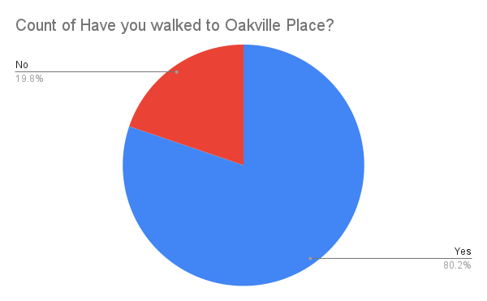

WOSS Specific Questions
The White (Oaks) Store
Question: Have you ever been to the white store?
The most common lunchtime spot for WOSS students, the White store earned its name through... its color? Possibly a shortening of "The White Oaks Store"? Nobody knows, but what we do know is that everybody has been...right?
Apparently not! It turns out about 3% of respondents (about X students) have never been. Not sure whether to offer those students congratulations or condolences...just have to ask one question: Why?

Oakville Place
Question: Have you ever walked to Oakville Place?
Oakville Place is by far the most popular mall for WOSS students to visit. The food is not great and the stores are not interesting, but it's a must go regardless. Students make the trek through fields and scramble through the adjacent school yards to get there. With so many pros to going, who wouldn't want to vist?
Well, 19.8% of respondents (approximately X students), that's who. We are shocked! Even with the obvious deterrents, walking to Oakville place only to spend 20 minutes there is a rite of passage. Tsk, tsk, tsk.

The Staircase
Question: Have you ever seen anyone makeout underneath "the" staircase?
The staircases at WOSS are wonderfully multi-functional. You can go up them, and you can go down them. However, some students decide to get "creative" with their use. Unfortunately, the underside of the staircase is still accessible to the poor other students who have the misfortune of coming across such ... passion.
According to our survey, over 47% of respondents (approximately X students) have seen such a display unfold. Devastating. Luckily,on the other side, almost an equal number of respondents have not seen it either. Unexpectedly, 9.4%(approximately X students) of respondents were the ones commiting such acts. I just hope it was worth it.

Mister Mistry's Victims
Question: Have you ever been caught skipping class by Mr. Mistry or Mr. Stevens?
With our senior year being a time of newfound freedom, many students opted to sign themselves out or just straight up skip classes when they felt like it. However, Mr. Mistry and Mr. Stevens made it their mission this year to ensure that we were always just as stressed as they are uptight. RIP to the students who have been caught (can't relate lol).
It looks like approximately 20.6% of respondents (X students) can relate! That is less than we expected, though it's important to remember that not everybody has a skipping problem. To Y student that were not caught, congratulations! You avoided the shameful walk back to class or, even worse, phone call to your parents.
Ms. Loft's Foes
Question: Have you ever had a fight with Ms. Loft?
Stories of Ms.Loft's rules and difficult policies have definitely made it around campus. Whether it be about prom table seating or student council elections, Ms.Loft seems to find joy in making our lives more difficult. Many a student has had to go head to head with her, and we wanted to know just how many.
According to our survey, 13.6% of respondents have fought with Ms. Loft, and 14.5% of them have had some sort of incident that we shouldn't even ask about. Seems about right. To all those who have had to face her, godspeed.

Bathroom Troublemakers
Question: Have you ever gotten high/vaped in the bathrooms?
Did you even go to WOSS if you never walked in on a group of people sitting on the floor of the bathroom vaping (or were the one doing it yourself?) If you ever wondered why the doors got taken off the main bathrooms, there you go. So we wanted to know how many of our graduating class are bathroom trouble makers...
and we were disappointed! Or possibly we were not disappointed, depending on whether or not our official stance is supporting bathroom vaping. 16.4% of respondents have participated in said activity, which is actually less than we expected. To the X students who did, though, y'all are menaces. (We love it)

Why Did They Close South Caf?
Question: Where did you hang out most at break?
Due to the pandemic, WOSS admin chose to close South Caf to anybody who didn't have a third period spare at the beginning of this year. Because of this, people had to get creative with where they spend break. At the time, it was miserable, but I think it was a little bit of a blessing in disguise because of how many awesome hangout spots we discovered. Now people hang out everywhere!
According to our survey, the majority of graduates (X students) find a random classroom to hangout in, which doubles the next most popular spots, the cafeteria and outside. Other than that, the interesting piece of data is that Y students regularly hang out at Oakville place, which is a solid distance away. Driving there repeatedly with todays gas prices? Mad lads.

Worst Experience
Question: What was your worst experience at WOSS?
When the guidance councillor told me I didn’t have a calculus credit, and made me take it again(even though I already had it). Then I found out ON MY OWN that it was an empty credit and I almost couldn’t graduate because I didn’t have enough credits.
Polasek. That’s all I’m going to say.
Got accused of not ordering woss grad wear when I literally showed them my receipt twice
A teacher telling me to not talk about what’s happening in palestine’s because we should leave the problem there and not worry ourselves here
they told me to take off my hood but it was my hijab and they didn’t believe me lmao
Sadeghi bringing out her adoption files and survival of Iraq's bombing on the first day of english class(we were the first to know she was adopting a child, BEFORE HER OWN FAMILY)
Get To Know Our Student Body
Averages
Question: What was your top 6 average for the 2021-2022 year?
We are incredibly proud to say that WOSS hosts a student body that is extremely intelligent and talented, regardless of their averages!
Future Pathway
Question: Where are you planning to go for Fall 2022?
We are incredibly proud to say that WOSS hosts a student body that is extremely intelligent and talented, regardless of their averages!
Clubs
Question: How many clubs were you in for the 2021-2022 year?
We are incredibly proud to say that WOSS hosts a student body that is extremely intelligent and talented, regardless of their averages!
ExtraCurriculurs
Question: How many hours did you spend on extracurriculurs per week (2021-2022)?
We are incredibly proud to say that WOSS hosts a student body that is extremely intelligent and talented, regardless of their averages!
Jobs
Question: Did you have a job for the 2021-2022 year?
We are incredibly proud to say that WOSS hosts a student body that is extremely intelligent and talented, regardless of their averages!
International Baccalaureate Program
Question: Did you do, drop, or never start IB?
We are incredibly proud to say that WOSS hosts a student body that is extremely intelligent and talented, regardless of their averages!
Worst Teachers
Question: What teacher gave you your worst grade ever?
Polasek
Wilson
Anthony
Sadeghi
Beck
Sachdeva
Attwell
Coomansingh
Ching
Russello
O'Meara
Coomansingh
Our Futures!
Universities
Question: Which university are you planning to attend for Fall 2022?
We are incredibly proud to say that WOSS hosts a student body that is extremely intelligent and talented, regardless of their averages!
Programs
Question: Which program stream are you going into?
We are incredibly proud to say that WOSS hosts a student body that is extremely intelligent and talented, regardless of their averages!